目次
1. 機能一覧
| No | 機能名 | 概要 |
|---|---|---|
| 1 | 地図表示 | Google Maps JavaScript APIを使用した地図の表示。ズーム・パン操作に対応 |
| 2 | レイヤー管理 | 複数のレイヤーの作成・削除・表示切替・スタイル編集機能 |
| 3 | 図形作図 | マーカー・ポリゴン・ライン・矩形・円の作図機能（Google Maps Drawing Manager使用） |
| 4 | GeoJSON入出力 | GeoJSON形式でのフィーチャのインポート・エクスポート |
| 5 | レイヤー一覧保存・復元 | 全レイヤー情報をJSON形式で保存・読み込み |
| 6 | フィーチャ情報表示 | 地図上のフィーチャクリック時にInfoWindowで詳細表示 |
| 7 | レイヤークリア | 選択レイヤーの全フィーチャを削除 |
| 8 | サンプルデータ読込 | デモ用のサンプルレイヤーを読み込み |
2. 画面遷移図
本アプリケーションはSingle Page Application（SPA）であり、画面遷移は発生しません。すべての機能は単一の画面上で提供されます。

図1: 画面フロー（状態遷移）
2.1 画面構成
| 領域 | 説明 |
|---|---|
| 地図エリア | Google Maps表示領域。Drawing Managerのツールバーを含む |
| レイヤーパネル | 画面右側に配置。レイヤー一覧、追加、編集、スタイル設定 |
| 操作ツールバー | 画面下部に配置。ファイル保存・読込、レイヤークリア、サンプル読込 |
| ステータスバナー | 画面最下部。操作結果やエラーメッセージを表示 |
3. システム構成

図2: システム構成図
3.1 アーキテクチャ概要
- フロントエンドのみ: サーバーサイド処理なし、完全にクライアントサイドで動作
- React SPA: React 19ベースのシングルページアプリケーション
- 静的ホスティング: ビルド後のHTML/CSS/JSを静的Webサーバーでホスティング可能
- 外部API連携: Google Maps JavaScript APIのみ
3.2 技術スタック
| レイヤー | 技術 | バージョン |
|---|---|---|
| UIフレームワーク | React | 19.2.0 |
| プログラミング言語 | TypeScript | 5.9.3 |
| ビルドツール | Vite (Rolldown版) | 7.2.5 |
| 地図API | Google Maps JavaScript API | weekly |
| データ形式 | GeoJSON | RFC 7946 |
4. 全体シーケンス図

図3: システム全体の処理シーケンス
5. 環境・前提条件
5.1 開発環境
| 項目 | 要件 |
|---|---|
| Node.js | v18以上推奨 |
| パッケージマネージャ | npm, yarn, pnpm いずれか |
| エディタ | VS Code推奨（TypeScript/ESLint拡張機能） |
5.2 実行環境（ブラウザ）
| ブラウザ | サポートバージョン |
|---|---|
| Google Chrome | 最新版およびその1つ前のメジャーバージョン |
| Microsoft Edge | 最新版およびその1つ前のメジャーバージョン |
| Firefox | 最新版およびその1つ前のメジャーバージョン |
| Safari | 最新版（macOS/iOS） |
5.3 必須設定
- Google Maps API キー: 環境変数
VITE_GOOGLE_MAPS_API_KEYに設定必須 - API制限: Maps JavaScript API、Drawing Libraryを有効化
- HTTPSまたはlocalhost: Google Maps APIはHTTPSまたはlocalhostでのみ動作
6. ログ方針
6.1 ログ出力先
本アプリケーションはクライアントサイドのみで動作するため、ログはブラウザのコンソールに出力されます。
6.2 ログレベル
| レベル | 用途 |
|---|---|
| info | 通常の操作完了メッセージ（例: レイヤー追加成功） |
| success | 重要な操作の成功（例: ファイル保存完了） |
| error | エラー発生時のメッセージ（例: APIキー未設定、ファイル読み込み失敗） |
6.3 ログ形式
- ユーザー向けメッセージは画面下部のステータスバナーに日本語で表示
- 開発者向けログはブラウザコンソールに出力
- タイムゾーン: ブラウザのローカルタイムゾーン
7. 運用・監視
7.1 監視観点
クライアントサイドアプリケーションのため、サーバー側の監視は不要です。
- Google Maps APIクォータ: Google Cloud Consoleで利用状況を監視
- ブラウザエラー: 本番環境ではSentryなどのエラー追跡ツールの導入を推奨
7.2 バックアップ
- ユーザーデータはブラウザのLocalStorageに保存されません（すべてファイル経由）
- ユーザー自身がレイヤー一覧をJSON形式でエクスポート・バックアップ
7.3 復旧手順
データ消失時は、ユーザーが保存したJSONファイルを読み込むことで復元可能です。
8. 未決定事項
| No | 項目 | 内容 | 決定方針 |
|---|---|---|---|
| 1 | 認証機能 | ユーザー認証・権限管理の要否 | 将来的な要件として検討。現時点では不要 |
| 2 | サーバーサイド保存 | レイヤーデータのクラウド保存機能 | フェーズ2以降で検討。現在はローカルファイルのみ |
| 3 | 多言語対応 | UI・メッセージの国際化 | 需要が確認できた時点で対応 |
| 4 | オフライン対応 | PWA化・オフライン機能の実装 | ユーザーフィードバックに基づき検討 |